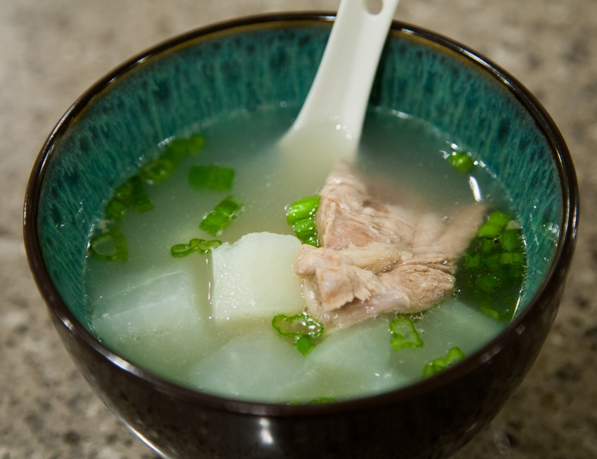

Pai Gu Tang

Description
A bone broth soup stewed with daikon and ginger.
Ingredients
- Short ribs (pork or lamb)
- Daikon
- Goji berries
- Ginger
- Scallions
- Cilantro
- Blanch the short ribs in boiling water for 2-3 minutes.
- Remove water with skimmed fats and replace with clean pot of water.
- Stew short ribs with ginger and scallions for 1-2 hours.